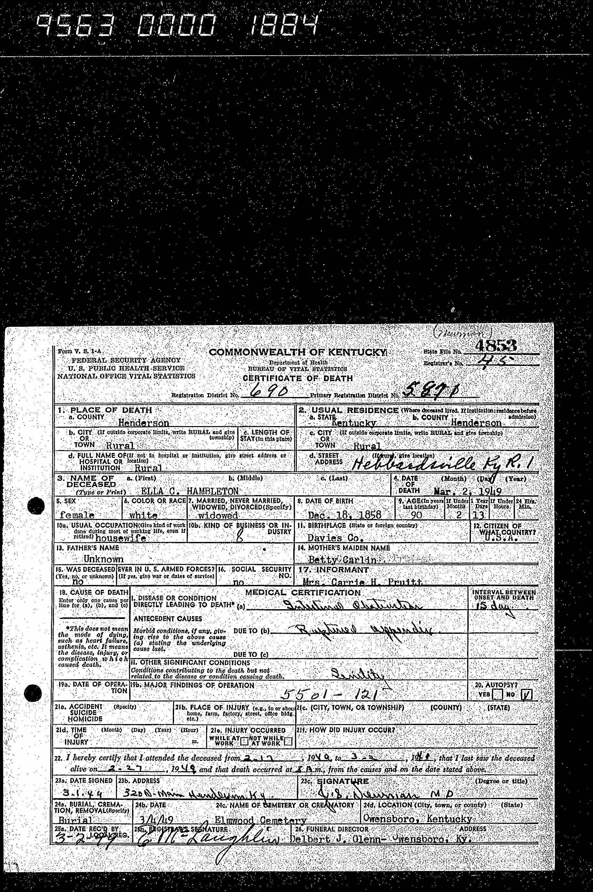
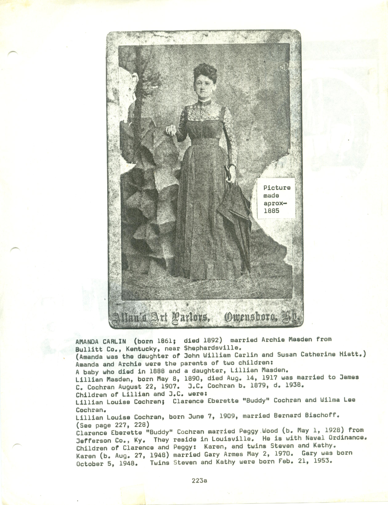
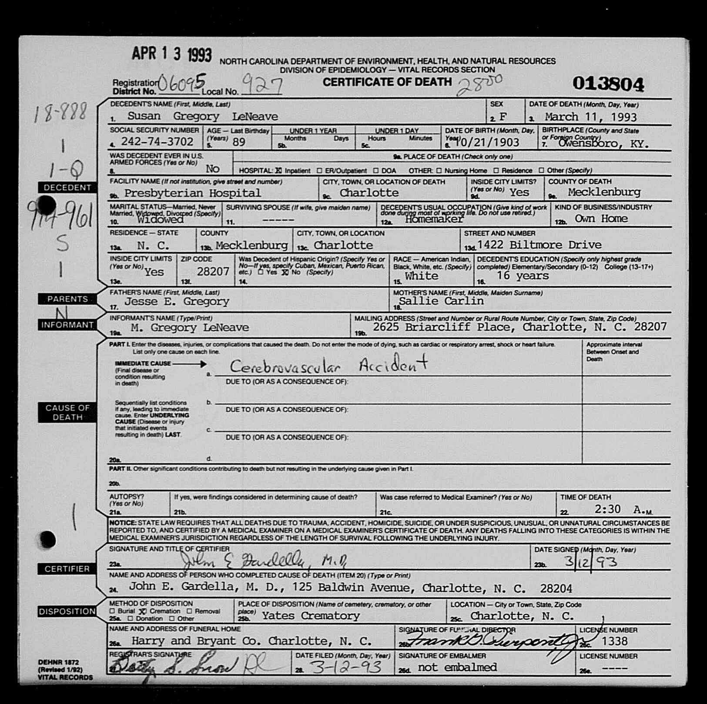
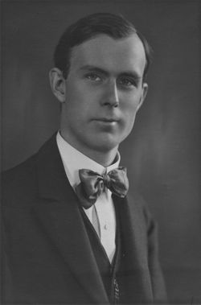

{kind=link}
{kind=link}
59. Sarah Forest "Sallie" CARLIN [scrapbook] (John William , Joseph , Matthias , Peter ) was born on 21 May 1862 in DAVIESS COUNTY KY. She died 1 on 16 Oct 1953 in CHARLOTTE NC. She was buried in ROSE HILL CEMETARY OWENSBORO KY.
54. Mary F CRABTREE (Eleanour Elizabeth CARLIN , Joseph , Matthias , Peter ) was born on 16 Sep 1856 in Daviess County KY. She died in 1895 in Daviess County KY. She was buried in Elmwood Cemetery, Owensboro, Kentucky. |
Mary married William T DORIOT. William was born in 1851. He died in 1935. |
They had the following children.
+ 69 F i Ella DORIOT was born in 1880. She died in 1963. 70 M ii
William G DORIOT was born in 1886. He died in 1957. 71 F iii
Cecil DORIOT was born in 1889. She died in 1975. 72 M iv
George DORIOT was born in 1895. He died in 1949.
|  |
55. Ella "Ella" CRABTREE [scrapbook] (Eleanour Elizabeth CARLIN , Joseph , Matthias , Peter ) was born on 18 Dec 1858. She died 1 on 2 Mar 1949 in Hebbardsville KY. She was buried in Elmwood Cemetery, Owensboro, Kentucky. |
Ella married William Willis HAMBLETON in Owensboro KY. William was born in 1851. He died in 1913. |
They had the following children.
73 M i
Edwin G "Eddie" HAMBLETON was born in 1876. He died in 1905. 74 F ii
Willie Belle HAMBLETON was born in 1886. She died in 1916.
56. Sallie "Sarah" CRABTREE (Eleanour Elizabeth CARLIN
, Joseph
, Matthias
, Peter
) was born on 10 May 1863 in Owensboro KY, DAVIESS COUNTY. She died on 18 Jan 1937 in Little Rock, Arkansas. She was buried in Little Rock, Arkansas.
|
Sarah married John Franklin MCNEMER in 1887. John was born in 1861 in Sorgho, Kentucky. He died on 22 Oct 1916 in Little Rock, Arkansas. |
They had the following children.
75 F i
Kathleen MCNEMER was born in 1890. She died in 1904. 76 M ii
Phillip MCNEMER was born in 1889. He died in 1959. 77 F iii
Mabel MCNEMER was born in 1894.
|  |
58. Amanda CARLIN [scrapbook] (John William , Joseph , Matthias , Peter ) was born in 1861 in INDIANA. She died in 1892. |
Amanda married Archie MASDEN in SHEPHARDSVILLE KY, BULLIT CO SHEPHARDSVILLE KY. Archie was born in BULLITT CO KY SHEPHARDSVILLE. |
They had the following children.
+ 78 F i Lillian MASDEN was born on 8 May 1890. She died on 14 Aug 1917.
| |
59. Sarah Forest "Sallie" CARLIN [scrapbook] (John William , Joseph , Matthias , Peter ) was born on 21 May 1862 in DAVIESS COUNTY KY. She died 1 on 16 Oct 1953 in CHARLOTTE NC. She was buried in ROSE HILL CEMETARY OWENSBORO KY. |
| |
Sallie married Jessee E GREGORY [scrapbook] on 10 Mar 1885 in DAVIES COUNTY KY. Jessee was born on 26 Apr 1861 in DAVIESS COUNTY KY. He died on 24 Dec 1939 in DAVIESS COUNTY KY. He was buried in Rosehill Elmwood Cemetery. |
They had the following children.
+ 79 M i Richeson Todd GREGORY was born on 6 Mar 1886. He died on 6 Apr 1950. 80 M ii
William Bennett GREGORY was born on 15 Jun 1888. He died on 3 Feb 1970.
William married Stella BOULWARE on 17 Jan 1915. 81 M iii
John Carlin GREGORY was born on 30 Oct 1889. He died on 14 Jun 1955.
John married Mayme ROBINSON on 20 Apr 1918. 82 M iv
Jessee Forest GREGORY was born on 23 Aug 1891 in OWENSBORO KY. He died on 27 Aug 1973.
Jessee married Martha TOWNSEND on 22 Oct 1921. 83 M v
Charles Harmon GREGORY was born on 5 Jun 1893. He died on 6 Jun 1962.
Charles married Lucille SHAUSTEE on 24 Dec 1924. 84 F vi 85 F vii

Susan Elizabeth GREGORY [scrapbook] was born on 21 Oct 1903 in Owensboro Ky, DAVIESS COUNTY KY. She died on 11 Mar 1993 in Charolette NC.
Susan married Marshall N LENEAVE on 17 Jul 1928.
 |
60. Lillian Catherine CARLIN [scrapbook] (John William
, Joseph
, Matthias
, Peter
) was born 1 on 10 Apr 1867 in DAVIESS COUNTY KY. She died on 22 Mar 1963 in INDIANAPOLIS IN STELLA ALLISONS HOME. She was buried 2 in ROSE HILL CEMETARY, OWENSBORO, KY.
|
 |
Lillian married 1, 2 Martin Thaddeus BELLEW "THAD" [scrapbook], son of William Ephriam BELLEW and Mary Magdalene CECIL "MAGGIE", on 10 Mar 1897 in Utica, DAVIESS CO KY. THAD was born after Jun 1863 in KENTUCKY. He died 3 in 1902 in 613 Fredrica St Owensboro KY, DAVIESS COUNTY. He was buried in 1902 in Mater Dolorosa Cemetery, Owensboro, Ky. |
They had the following children.
+ 86 M i Martin Thad "BUSTER" BELLEW was born on 19 Nov 1900. He died on 17 Nov 1953 from BURNED TO DEATH. + 87 F ii Estelle Jarnet "Stella" BELLEW was born in Jun 1899. She died on 26 Nov 1970.
Lillian also married 1 T.H. POWELL on 5 Feb 1915 in SEBREE KY. The marriage ended in divorce. T.H. was born in 1836 in SEBREE KY. Lillian and T.H. obtained a divorce on 17 Oct 1873. |
|  |
67. Fayette H CARLIN [scrapbook] (John M , David F , Matthias , Peter ) was born on 10 Feb 1885 in Louisville. He died on 14 Jan 1922 in Los Angeles, California. He was buried in Elmlawn Cemetery. |
Fayette married Clara E. Clara was born on 1 Apr 1888. She died on 26 May 1978 in Hollywood CA. She was buried in Forest Lawn Memorial, Vale Of Peace. |
They had the following children.
+ 88 M i Richard John "Dick" CARLIN was born on 30 Sep 1921. He died on 6 Dec 2016. 89 M ii
Fayette Hewitt CARLIN was born on 14 Apr 1911 in New York. He died on 11 Nov 1994 in Ventura County, California. He was buried in Ivy Lawn Memorial Park.


{kind=link}
{kind=link}